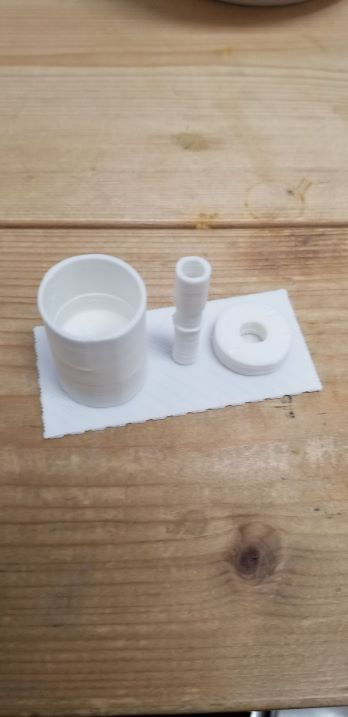

・da vinci miniで製作した試作1号です。
構造は細かく全てを見せることはできませんが、この試作は失敗かつ構造も物理的にダメなので写真をUPしました。今回はどのような構造で前段取りを無くせるか、考えていても思いつかなかったのでとりあえず形にしてから考えることにしました。とりあえず形にしてみて、構造についてどうしたらいか浮かんできたのでそれを次回作ることにします。なので失敗した点を記述します。
失敗した点は、2つあります。
1つ目に丸の造形がうまくいかなかったことです。fusion360上では真円であったはずのパーツを出力すると楕円になってしまったということです。 次はda vinci miniの設定を変えて出力してみようと思います。例えば印刷速度やピッチ等です。2つ目に寸法に誤差があり、本来であれば一致するはずのパーツが当然一致しなかったということです。これも修正して改良していきます。